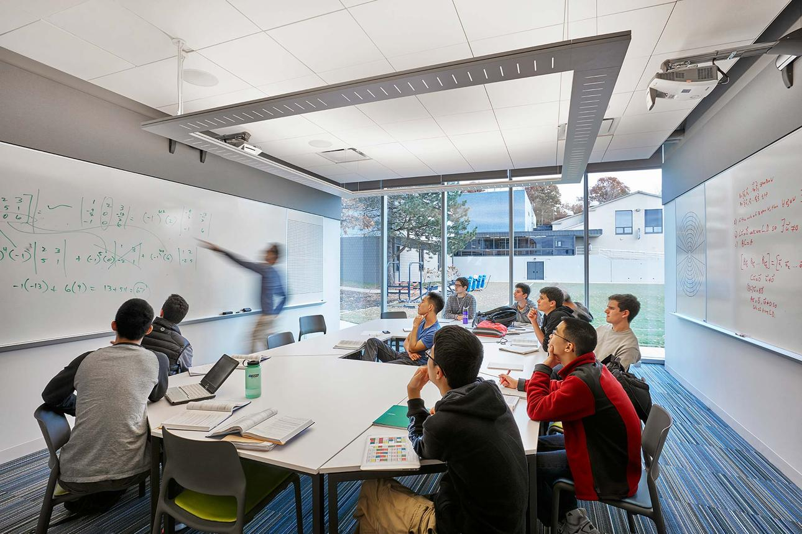

Our Services

TSM Maths Club provide Every Mathematics Lessons every Sunday in Mahikeng.Grade 11 Learners attend from 8:00am to 11:00am, whlie Grade 12 learners attend from 11:00pm to 4:00pm
Our lessons Helps learners improve their Understanding of Mathematics while enhancing Analyticl Thinking and Problem-solving. We Intergrating Concepts of P1 And P2 to make Math easy and Fashionable.
Maths in Action
See how TSM Math Club makes Mathematics engaging, practical, easier and Fashionable.
What Learners Recieve
Weekly Sunday Maths lessons
Weekly Mathematics Lessons made to prepare Students and strengthen their knowledge
Topic Explanations
Clear Explanations of Mathematics concepts to help learners understand difficult topics
Practice Questions
Regular practice activites that allow learners to apply the concepts they learned.
Exam Preparations
Examination prepation designed to build confidence and improve Mathematics performance
Tutoring Packages
TSM Maths Club offers simple Tutoring packages to meet the needs of Learners attending Sunday Classes
Standard Tutoring Package
Includes Sunday Math Lessons, Assembly and Scripture to build Faith, practice
activities, and Examination prepation.
Suitable For all Learners. Package Provides a wide range of materials to
help Students learn,prepare for assignments and explore advanced concepts across
topics like Trigonometry, algebra, geometry, and calculus.
R300 per Month
Enquire NowPremium Tutoring Package
Provides additional lessons. Online session which meets the needs of learners who needs more free time to grasp content.
R500 per Month
Enquire NowFrequently Asked Questions
Find Answers to common questions about TSM Math Club
TSM Math Club provides Mathematics Support for Grade 11 and Grade 12
Visit our Services page to explore the available tutoring support and packages
Visit our Enquiry page to be heard. Send us your message via email through Contact page(Get in Touch) form by filling in
Go to Enquiry Get in TouchVisit our Resources page to use the Mathematics practice feature
Go to Resources